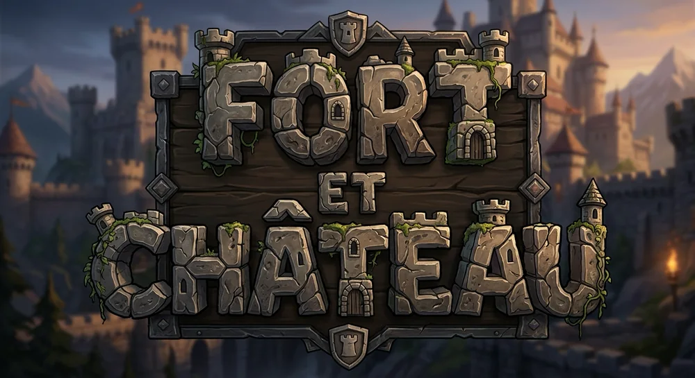
L'index des forteresses du monde
À la découverte des forteresses du monde.
Fort et Château réunit 156 forts, châteaux et palais dans 38 pays. Faites tourner le globe 3D, écoutez le Barde raconter l'histoire des lieux, défiez vos châteaux préférés en duel et remplissez votre Passeport d'Explorateur. Percez leurs secrets.
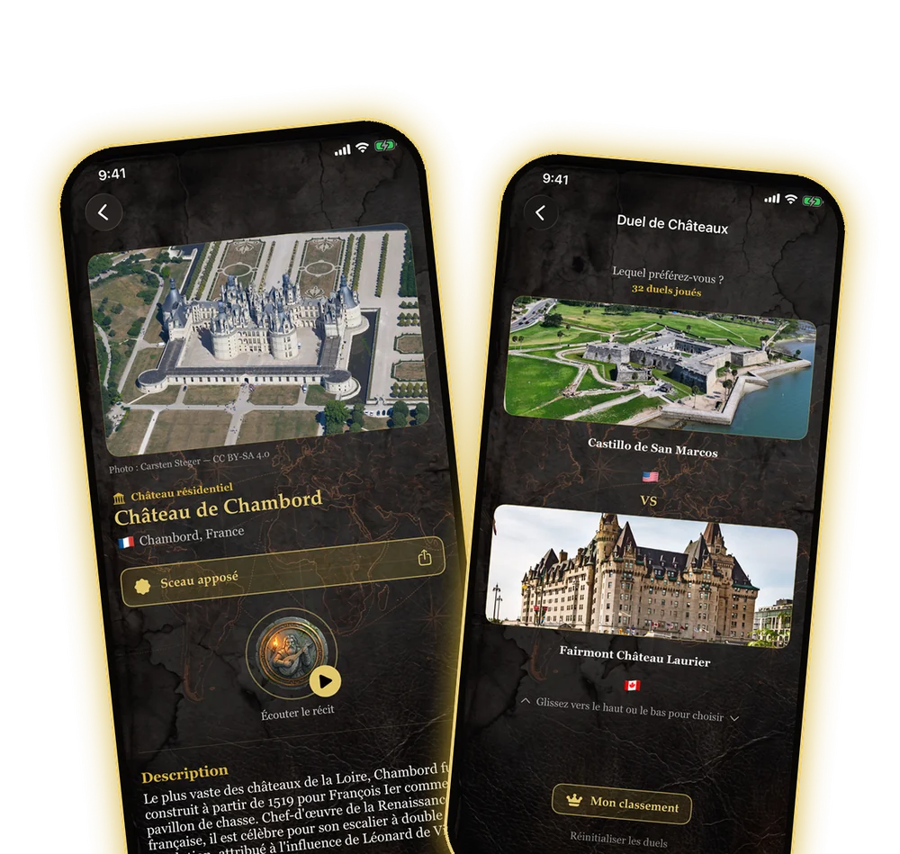
Version 1.3 : gratuite, plus de châteaux
Le voyage s'agrandit : plus de pays, plus de récits, et un point de départ gratuit.
- Fort et Château est maintenant gratuit à télécharger : un site par pays est offert (38 forts et châteaux emblématiques), un achat unique débloque tout le reste
- 25 nouveaux forts et châteaux, dont 6 nouveaux pays : Autriche, Belgique, Slovénie, Norvège, Mexique et Colombie
- Nouvelle section « Les récits du Barde » : tous les sites racontés, réunis par pays
- Les personnes qui avaient déjà acheté l'app gardent tout débloqué, sans frais supplémentaires
- Au total : 156 sites dans 38 pays
Ce que fait Fort et Château
Un seul voyage, six façons d'explorer
Globe 3D
Faites tourner le globe, touchez un continent et découvrez ses pays : 38 pays sur 6 continents.
Fiches illustrées
Photo, histoire du lieu, carte pour tracer la route et un « Secret du Château » à révéler en grattant l'écran.
Le Barde
Touchez son médaillon : une voix raconte l'histoire du lieu, en français ou en anglais. 15 sites racontés.
Duel de châteaux
Deux châteaux, un seul choix. Votre classement personnel se construit duel après duel, avec un Top 3 à partager.
Passeport de l'Explorateur
Sur place, validez votre visite : votre sceau de cire est apposé (position vérifiée à moins de 300 m). 10 badges à gagner.
Carnet de croquis
Notes privées, photos de votre visite, note de beauté et d'accessibilité, pour garder la mémoire de chaque lieu.
Le catalogue
De Chambord à Himeji
Châteaux de conte de fées, citadelles, forts côtiers, palais fortifiés : 156 lieux à découvrir, de l’Europe à l’Océanie.
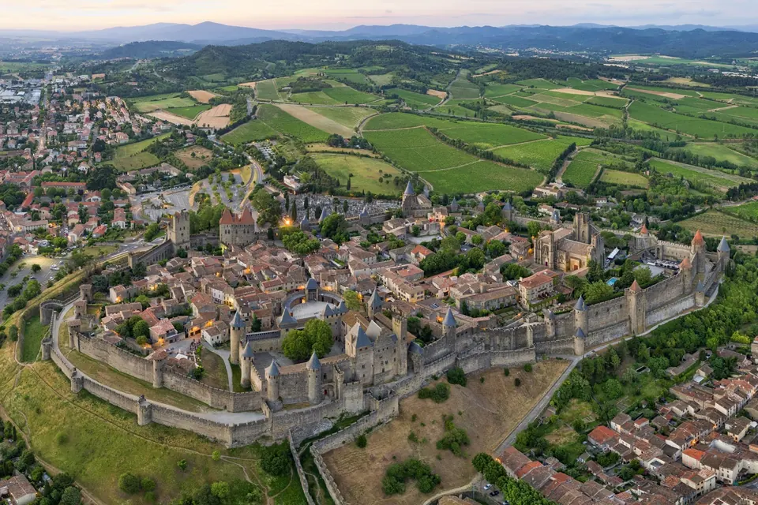
Photos : Wikimedia Commons (licences libres). Crédits détaillés.
Aperçu
L’app, de l’intérieur
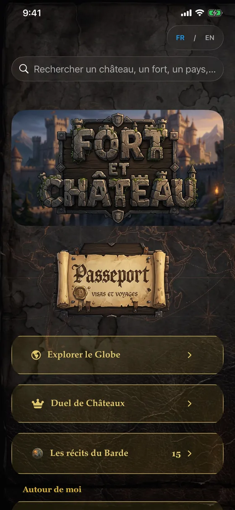
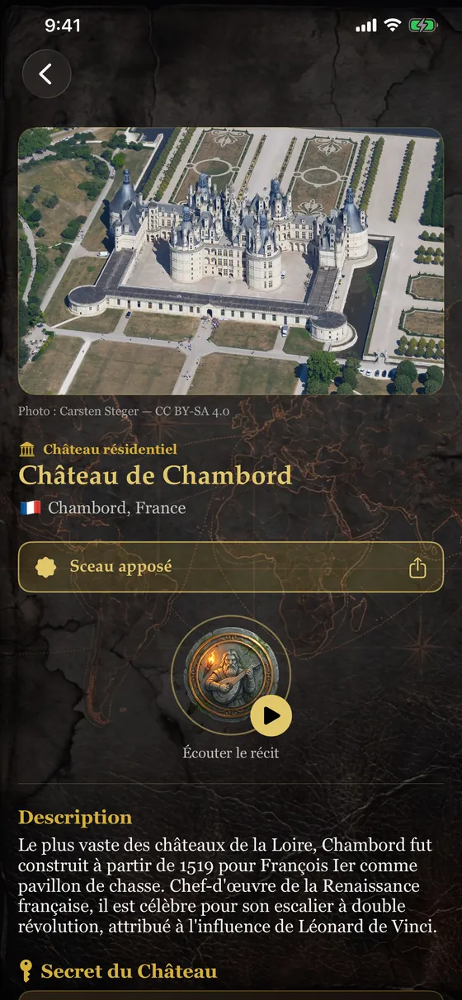
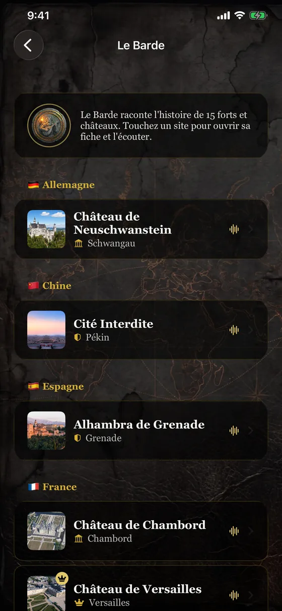
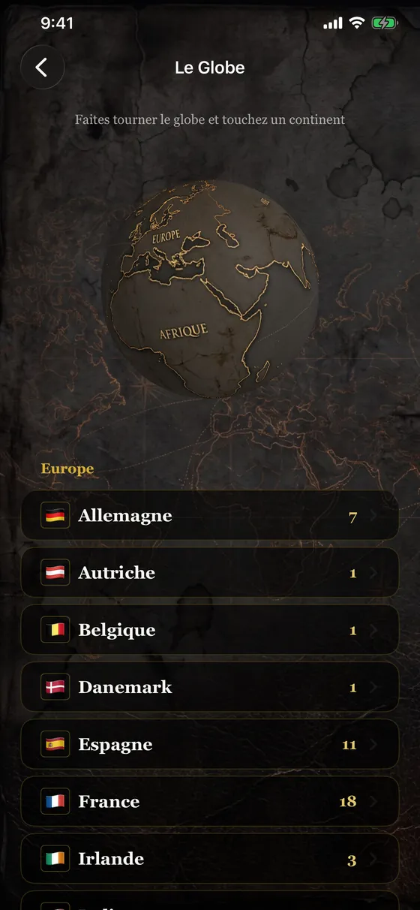
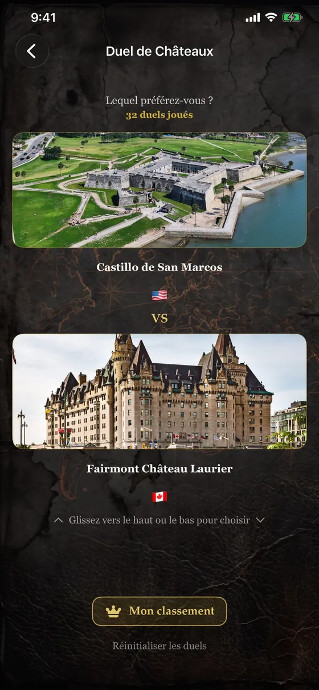
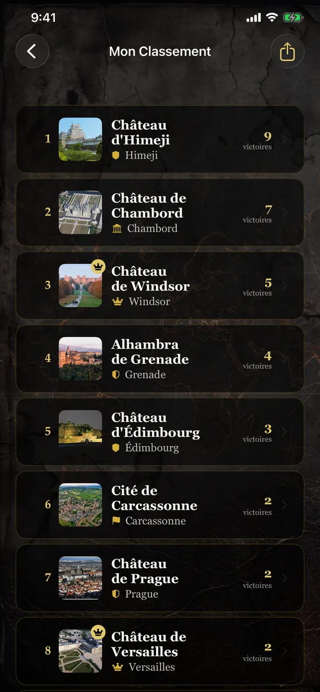
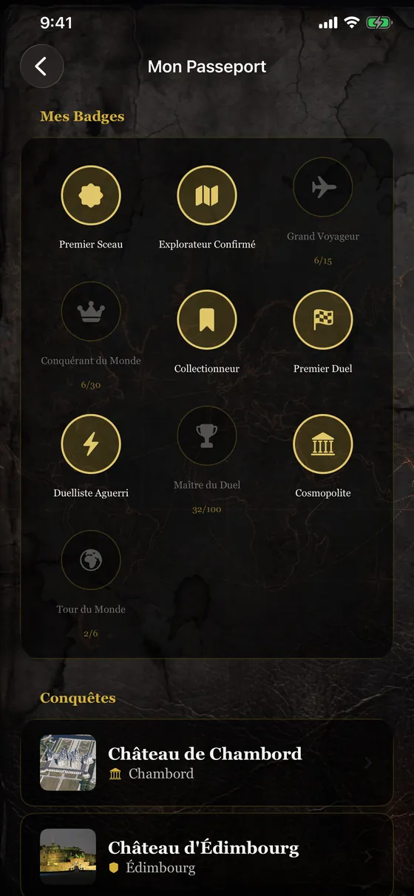
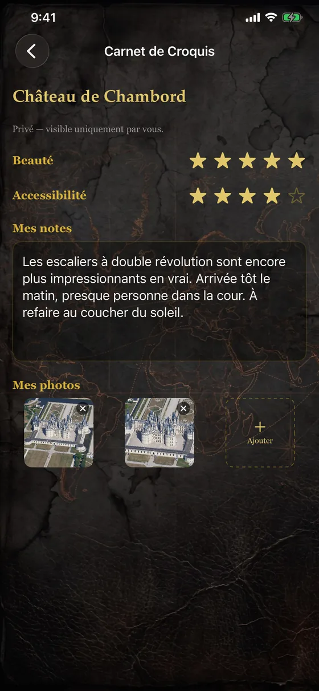
Gratuit pour commencer
Un site par pays, tout le reste en un seul achat
Gratuit
Au téléchargement
- 38 forts et châteaux emblématiques, un par pays
- Globe 3D, recherche et « Autour de moi »
- Duel et classement sur ces sites
- Passeport, badges et Carnet de croquis
- Récits du Barde sur 3 sites
Tous les châteaux
2,99 $ CA · achat unique
- Les 118 autres forts et châteaux
- Le Duel sur tout le catalogue
- Les 15 récits du Barde
- Un seul achat, sans abonnement
- Pour toujours, à restaurer sur vos appareils
Aucun compte, aucune publicité, aucun suivi. Tout le contenu (fiches, photos, récits du Barde) est dans l’app, qui fonctionne hors ligne. Votre position et vos carnets restent sur votre appareil. Politique de confidentialité
Prêt à explorer ?
Téléchargez Fort et Château sur l'App Store et partez à la découverte des forteresses du monde.
Télécharger sur l'App Store